| HTML5 | CSS3 | JavaScript |
| Command Line | Git | GitHub |
|  | ||
| Windows 10 | Windows 11 | Microsoft Office |
Coding
Under my skills I list HTML5 and CSS3 both of which I had some small experience with before 2022, but not much. I had previously attempted to learn to use these (and even built a few quite ugly webpages with no real purpose) in the early 2010s. After losing interest and some self-confidence I was inspired to try again by the combination of my wife returning to school, and my continued curiosity in the subject. My father had always been a programmer (he does mostly database work these days) and had tried to push me to learn Visual Basic and C++ before but I never made much headway. What I know now I learned mostly from Codecademy's paid lessons which just seem to click with me and make the learning easy and straightforward. I can take my time and do additional side research on topics I don't quite grasp. Now I feel very confident with both CSS and HTML and I'm currently working through JavaScript and learning to use Git for version control.
Windows 10 and Microsoft Office
Since I was 4 or 5 (I believe) I have been using Windows PCs to play video games (the earlierst I can remember was Command and Conquer 1996) and do schoolwork. In middle school we had Apple laptops which were useful learning tools, but I didn't care for their UX. I've used many Office applications including mostly Word, Excel, and Outlook, which I still use daily at work. I've built my own home PC three times, once with the help of my father when I was younger. The first PC I built completely on my own was a Windows 10 PC. I've also had some experience with Linux. I restored some usefulness to one of my wife's old laptops by upgrading some hardware and swapping its OS to a lighter weight Linux distro.